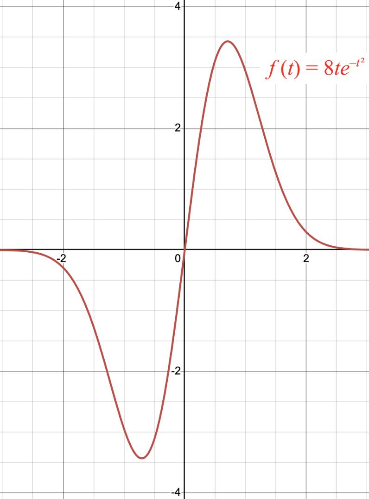

Solve the indefinite integral. ∫ (x / √(x² + 4)) dx
Evaluate the definite integral. Answer in exact form. ∫ (x ln(x)) dx on the interval [1, 5].
Compute the average value of y=1/x on the interval [-e,-1]. Answer in exact form.
What is the average value of f(t) = 8te-t² on the interval [-2, 2]? No computations required. Use the graph below to answer the question and describe your reasoning.
